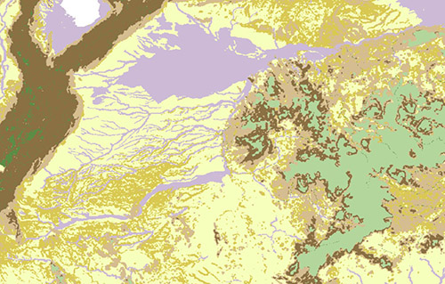
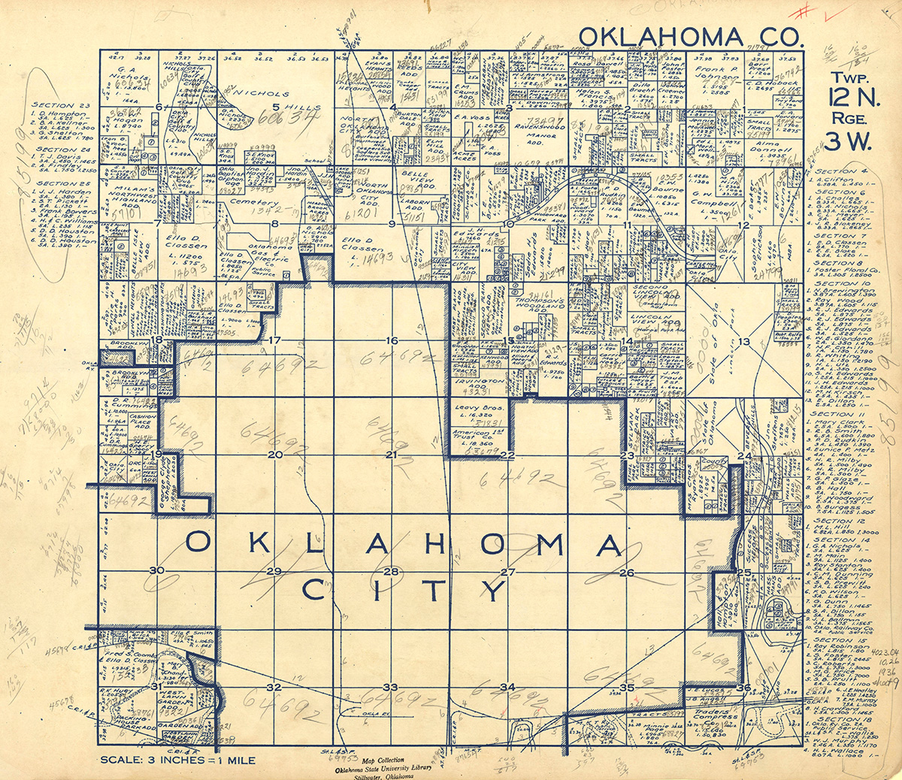

Maps!
Kevin Dyke, Maps and Spatial Data Curator, Associate Professor, Oklahoma State University
A little background
Spatial data as an umbrella term.

GIS data
# Vector 
Raster

maps

Spatial data is an indelible feature of government documents. Thanks largely to a number of heavy hitting agencies.
USGS
Census Bureau
Bureau of Land Management
# USGS #### <!-- .element: class="fragment" -->The ones you can blame for all those topographic maps.
Kidding!
For many dedicated map libraries (including my own), USGS publications dominate.
USGS topos make appealing candidates for weeding.
TopoView
https://ngmdb.usgs.gov/topoview/
USGS Earth Explorer
https://earthexplorer.usgs.gov/
Census data
NHGIS
https://www.nhgis.org/
Bureau of Land Management
Deciphering the Public Land Survey
General Land Office Records
https://glorecords.blm.gov/default.aspx
## Further reading Care and Feeding of Maps: Tips for Managing Your Map Collection - Selected Resources http://hdl.handle.net/11213/11237